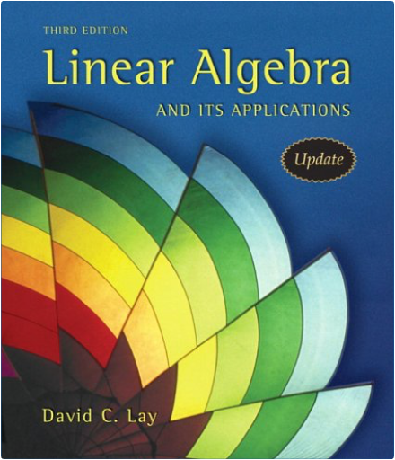
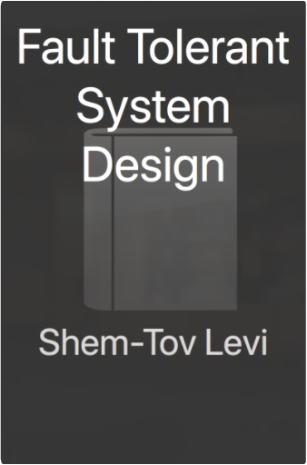
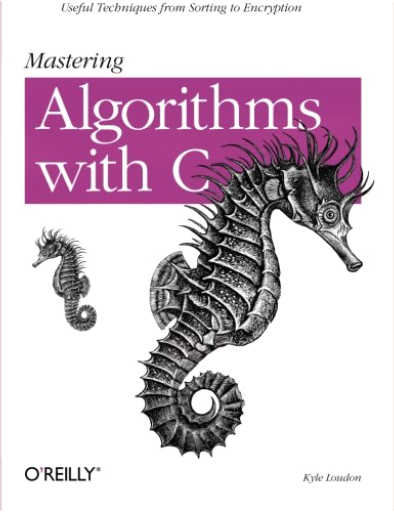
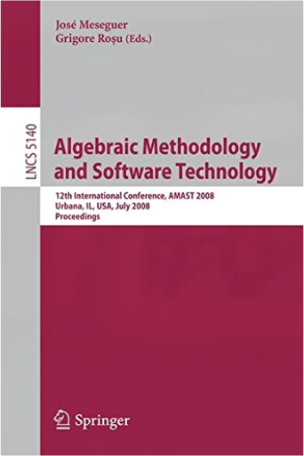
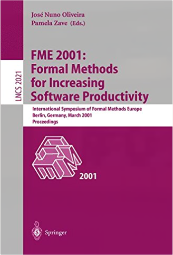
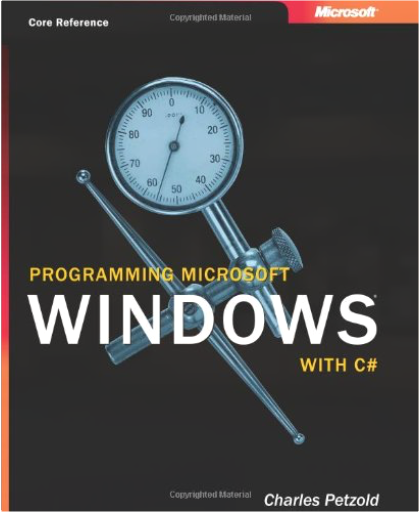

 Linear Algebra and Its Applications, 3rd Updated EditionDavid C. Lay  Linear algebra is relatively easy for students during the early stages of the course, when the material is presented in a familiar, concrete setting. But when abstract concepts are introduced, students often hit a brick wall. Instructors seem to agree that certain concepts (such as linear independence, spanning, subspace, vector space, and linear transformations), are not easily understood, and require time to assimilate. Since they are fundamental to the study of linear algebra, students' understanding of these concepts is vital to their mastery of the subject. Lay introduces these concepts early in a familiar, concrete Rn setting, develops them gradually, and returns to them again and again throughout the text so that when discussed in the abstract, these concepts are more accessible.  006363953X  Fault Tolerant System DesignShem-Tov Levi, Ashok K. Agrawala This book presents a comprehensive exploration of the practical issues, tested techniques, and accepted theory for developing fault tolerant systems. It is a ready reference to work already done in the field, with new approaches devised by the authors. The book covers each phase of fault tolerant design, including: hardware and software architecture incorporating OSI networking models; distributed system requirements and communication algorithms; fault tolerance mechanisms and exception handling; resource allocation and performance optimization; and much more.  Join the leagues of thousands of programmers and learn C++ from some of the best. The fifth edition of the best seller Sams Teach Yourself C++ in 21 Days, written by Jesse Liberty, a well-known C++ and C# programming manual author and Bradley L. Jones, manager for a number of high profiler developer websites, has been updated to the new ANSI/ISO C++ Standard. This is an excellent hands-on guide for the beginning programmer. Packed with examples of syntax and detailed analysis of code, fundamentals such as managing I/O, loops, arrays and creating C++ applications are all covered in the 21 easy-to-follow lessons. You will also be given access to a website that will provide you will all the source code examples developed in the book as a practice tool. C++ is the preferred language for millions of developers-make Sams Teach Yourself the preferred way to learn it!  To-the-point, authoritative, no-nonsense solutions have always been a trademark of O'Reilly books. The In a Nutshell books have earned a solid reputation in the field as the well-thumbed references that sit beside the knowledgeable developer's keyboard. C++ in a Nutshell lives up to the In a Nutshell promise. C++ in a Nutshell is a lean, focused reference that offers practical examples for the most important, most often used, aspects of C++.C++ in a Nutshell packs an enormous amount of information on C++ (and the many libraries used with it) in an indispensable quick reference for those who live in a deadline-driven world and need the facts but not the frills.The book's language reference is organized first by topic, followed by an alphabetical reference to the language's keywords, complete with syntax summaries and pointers to the topic references. The library reference is organized by header file, and each library chapter and class declaration presents the classes and types in alphabetical order, for easy lookup. Cross-references link related methods, classes, and other key features. This is an ideal resource for students as well as professional programmers.When you're programming, you need answers to questions about language syntax or parameters required by library routines quickly. What, for example, is the C++ syntax to define an alias for a namespace? Just how do you create and use an iterator to work with the contents of a standard library container? C++ in a Nutshell is a concise desktop reference that answers these questions, putting the full power of this flexible, adaptable (but somewhat difficult to master) language at every C++ programmer's fingertips.  Mastering Algorithms with C: Useful Techniques from Sorting to EncryptionKyle Loudon There are many books on data structures and algorithms, including some with useful libraries of C functions. Mastering Algorithms with C offers you a unique combination of theoretical background and working code. With robust solutions for everyday programming tasks, this book avoids the abstract style of most classic data structures and algorithms texts, but still provides all of the information you need to understand the purpose and use of common programming techniques.  Number Theory Through Inquiry; is an innovative textbook that leads students on a carefully guided discovery of introductory number theory. The book has two equally significant goals. One goal is to help students develop mathematical thinking skills, particularly, theorem-proving skills. The other goal is to help students understand some of the wonderfully rich ideas in the mathematical study of numbers. This book is appropriate for a proof transitions course, for an independent study experience, or for a course designed as an introduction to abstract mathematics. Math or related majors, future teachers, and students or adults interested in exploring mathematical ideas on their own will enjoy ;Number Theory Through Inquiry.; Number theory is the perfect topic for an introduction-to-proofs course. Every college student is familiar with basic properties of numbers, and yet the exploration of those familiar numbers leads us to a rich landscape of ideas. Number Theory Through Inquiry contains a carefully arranged sequence of challenges that lead students to discover ideas about numbers and to discover methods of proof on their own. It is designed to be used with an instructional technique variously called guided discovery or Modified Moore Method or Inquiry Based Learning (IBL). Instructors materials explain the instructional method. This style of instruction gives students a totally different experience compared to a standard lecture course. Here is the effect of this experience: Students learn to think independently: they learn to depend on their own reasoning to determine right from wrong; and theydevelop the central, important ideas of introductory number theory on their own. From that experience, they learn that they can personally create important ideas. They develop an attitude of personal reliance and a sense that they can think effectively about difficult problems. These goals are fundamental to the educational enterprise within and beyond mathematics. |  The world's bestselling computer security book—fully expanded and updated  Algebraic Methodology and Software Technology: 12th International Conference, AMAST 2008 Urbana, IL, USA, July 28-31, 2008, ProceedingsJosé Meseguer, Grigore Rosu This book constitutes the refereed proceedings of the 12th International Conference on Algebraic Methodology and Software Technology, AMAST 2008, held in Urbana, IL, USA, in July 2008. The 28 revised full papers presented together with 3 invited talks were carefully reviewed and selected from 58 submissions. Among the topics covered are all current issues in formal methods related to algebraic and logical foundations, software technology, and to programming methodology including concurrent and reactive systems, evolutionary software/adaptive systems, logic and functional programming, object paradigms, constraint programming and concurrency, program verification and transformation, programming calculi, specification languages and tools, formal specification and development case studies, logic, category theory, relation algebra, computational algebra, algebraic foundations for languages and systems, coinduction, theorem proving and logical frameworks for reasoning, logics of programs, as well as algebra and coalgebra.  This book presents the refereed proceedings of the 14th International Symposium on Formal Methods, FM 2006, held in Hamilton, Canada, August 2006. The book presents 36 revised full papers together with 2 invited contributions and extended abstracts of 7 invited industrial presentations, organized in topical sections on interactive verification, formal modelling of systems, real time, industrial experience, specification and refinement, programming languages, algebra, formal modelling of systems, and more.  This book constitutes the thoroughly refereed post-proceedings of the Second Symposium on Trustworthy Global Computing, TGC 2006, held in Lucca, Italy, in November 2006. The 14 revised papers presented together with two keynote lectures were carefully reviewed and selected from 32 submissions. The book starts off with activity reviews of four FP6 programmes of the European Union: Aeolus, Mobius, Sensoria, and Catnets.  FME 2001: Formal Methods for Increasing Software Productivity: International Symposium of Formal Methods Europe, Berlin, Germany, March 12-16, 2001, ProceedingsJose N. Oliveira, Pamela Zave FME 2001 is the tenth in a series of meetings organized every eighteen months by Formal Methods Europe (FME), an independent association whose aim is to stimulate the use of, and research on, formal methods for software development. It follows four VDM Europe Symposia, four other Formal Methods Europe S- posia, and the 1999 World Congress on Formal Methods in the Development of Computing Systems. These meetings have been notably successful in bringing - gether a community of users, researchers, and developers of precise mathematical methods for software development. FME 2001 took place in Berlin, Germany and was organized by the C- puter Science Department of the Humboldt-Universit¨at zu Berlin. The theme of the symposium was Formal Methods for Increasing Software Productivity. This theme recognizes that formal methods have the potential to do more for industrial software development than enhance software quality { they can also increase productivity at many di erent points in the software life-cycle. The importance of the theme is borne out by the many contributed papers showing how formal methods can make software development more e cient. There is an emphasis on tools that nd errors automatically, or with relatively little human e ort. There is also an emphasis on the use of formal methods to assist with critical, labor-intensive tasks such as program design and test-case generation.  This is the most successful operating systems book on the market, with lifetime sales of well over 200,000 copies. In the fourth edition, this book enhances its reputation for clear coverage of the fundamental concepts which are the foundation of operating systems. The book has been revised to decrease coverage of older ideas, and expand discussion of new, common operating systems.  Programming Microsoft® Windows® with C#Charles Petzold “Look it up in Petzold” remains the last word on Windows development. In this .NET-ready Windows programming guide, the best-selling author shows you how to get the most out of Windows Forms—the next-generation Windows programming class library. You’ll discover how to use C# to create dynamic user interfaces and graphical outputs for Windows applications. With dozens of examples of client applications to illustrate common techniques and plenty of no-nonsense advice on best programming practices, you’ll be C# sharp in no time. Topics covered in this guide include: A tour of C#Windows FormsEssential structuresAn exercise in text outputLines, curves, and area fillsTapping into the keyboardPages and transformsTaming the mouseText and fontsThe timer and timeImages and bitmapsButtons, labels, and scrollsBéziers and other splinesMenusPaths, regions, and clippingDialog boxesBrushes and pensEdit, list, and spin controlsFont funToolbars and status barsPrintingTree view and List viewMetafilesClip, drag, and drop |

Texas ACM Library
Collection Total:
62 Items
62 Items
Last Updated:
Nov 13, 2017
Nov 13, 2017
 Made with Delicious Library
Made with Delicious Library